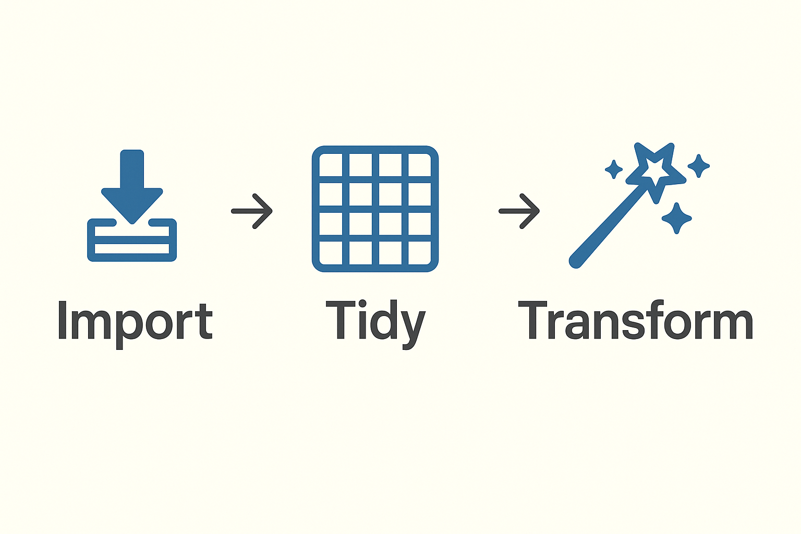
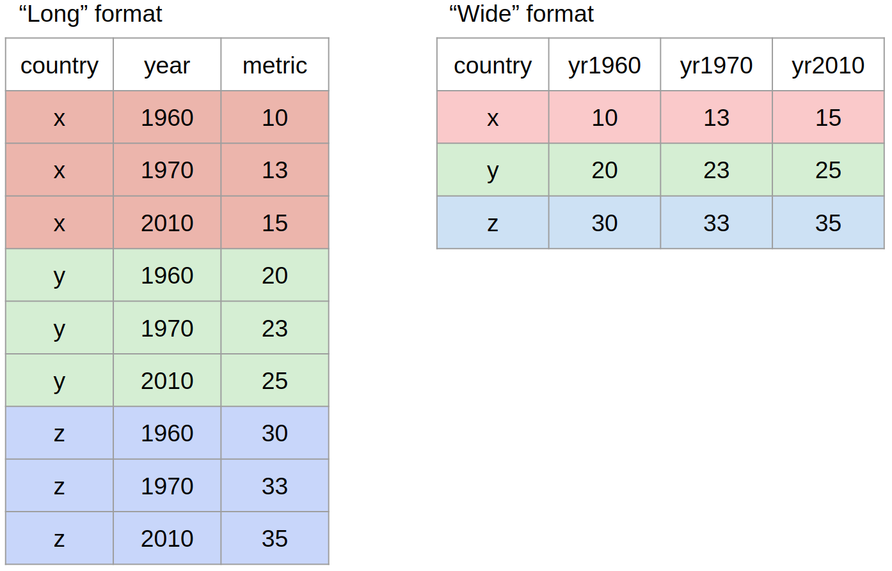

Data Wrangling II
Attendance Check-In Code
Enter the attendance code for today’s seminar to log your attendance.
You can log your attendance on iSheffield

Last week we explored how we import, inspect our data and get it into tidy format
We identified issues that may appear in our data like
Now we will look at how we:
What is the pipe?
|> or %>%, takes an ouput of one function and ‘pipes’ it to the next functiontidyverse comes into its own - helping us to build clear, step-by-step workflowsShortcut! Ctrl + Shift + M on Windows and Cmd + Shift + M on a Mac
Without the pipe, we typically have to nest functions
The pipe makes the code much more intuitive and readable
The value of the pipe becomes clear when we start adding steps to the transformations we execute on our dataset
Recap from last week
library(here)
library(tidyverse)
df <- read_csv(here("data","fake_t1t2.csv")) #load data
head(df) # take a look# A tibble: 6 × 7
ID DOB Condition Timepoint Q1 Q2 Q3
<chr> <date> <chr> <chr> <dbl> <dbl> <dbl>
1 P001 1998-03-15 Control Time 1 4 5 NA
2 P001 1998-03-15 Control Time 2 5 4 3
3 P002 1995-11-20 Treatment Time 1 5 5 2
4 P002 1995-11-20 Treatment Time 2 4 4 4
5 P003 1978-08-01 Control Time 1 5 NA 3
6 P003 1978-08-01 Control Time 2 5 4 NAThe select() function allows us to choose specific columns (variables) to keep in our dataset.
If we have lots of columns to select, typing everything out will get tedious
select() works with helper functions which makes things easier# A tibble: 10 × 3
Q1 Q2 Q3
<dbl> <dbl> <dbl>
1 4 5 NA
2 5 4 3
3 5 5 2
4 4 4 4
5 5 NA 3
6 5 4 NA
7 NA NA NA
8 3 2 2
9 4 5 3
10 3 3 3starts_with() selects columns that begin with a specific string.
The filter() function allows us to choose specific rows (observations) to keep in our dataset.
# A tibble: 7 × 7
ID DOB Condition Timepoint Q1 Q2 Q3
<chr> <date> <chr> <chr> <dbl> <dbl> <dbl>
1 P001 1998-03-15 Control Time 1 4 5 NA
2 P001 1998-03-15 Control Time 2 5 4 3
3 P002 1995-11-20 Treatment Time 1 5 5 2
4 P002 1995-11-20 Treatment Time 2 4 4 4
5 P003 1978-08-01 Control Time 1 5 NA 3
6 P003 1978-08-01 Control Time 2 5 4 NA
7 P005 1994-06-10 Control Time 1 4 5 3Filtering on multiple conditions
# Filters participants who responded above 3 on Q1
# who were in Treatment Condition
df %>%
filter(Q1 > 3 & Condition == "Treatment")# A tibble: 2 × 7
ID DOB Condition Timepoint Q1 Q2 Q3
<chr> <date> <chr> <chr> <dbl> <dbl> <dbl>
1 P002 1995-11-20 Treatment Time 1 5 5 2
2 P002 1995-11-20 Treatment Time 2 4 4 4Can also use | for OR
Filtering for a list of values
#eligible participants
ps <- c("P001", "P003")
# selects these participants
df %>%
filter(ID %in% ps)# A tibble: 4 × 7
ID DOB Condition Timepoint Q1 Q2 Q3
<chr> <date> <chr> <chr> <dbl> <dbl> <dbl>
1 P001 1998-03-15 Control Time 1 4 5 NA
2 P001 1998-03-15 Control Time 2 5 4 3
3 P003 1978-08-01 Control Time 1 5 NA 3
4 P003 1978-08-01 Control Time 2 5 4 NAgroup_by()Often we will want to perform an operation on only a group of our participants
The group_by() function tells R how to split your data into these logical groups.
group_by() and summarise()We can use group_by() with summarise() to calculate summary statistics by group
group_by() and summarise()We can group by multiple conditions
# Group by Condition, then calculate the mean age for each group
df %>%
group_by(Condition,Timepoint) %>%
summarise(mean_q1 = mean(Q1), n = n())# A tibble: 4 × 4
# Groups: Condition [2]
Condition Timepoint mean_q1 n
<chr> <chr> <dbl> <int>
1 Control Time 1 4.33 3
2 Control Time 2 4.33 3
3 Treatment Time 1 NA 2
4 Treatment Time 2 3.5 2mutate()mutate() is used for adding columns to your dataset or modfying existing ones
It’s the workhorse of data transformation!
mutate()# A tibble: 10 × 8
ID DOB Condition Timepoint Q1 Q2 Q3 q1_q2
<chr> <date> <chr> <chr> <dbl> <dbl> <dbl> <dbl>
1 P001 1998-03-15 Control Time 1 4 5 NA 9
2 P001 1998-03-15 Control Time 2 5 4 3 9
3 P002 1995-11-20 Treatment Time 1 5 5 2 10
4 P002 1995-11-20 Treatment Time 2 4 4 4 8
5 P003 1978-08-01 Control Time 1 5 NA 3 NA
6 P003 1978-08-01 Control Time 2 5 4 NA 9
7 P004 1992-01-25 Treatment Time 1 NA NA NA NA
8 P004 1992-01-25 Treatment Time 2 3 2 2 5
9 P005 1994-06-10 Control Time 1 4 5 3 9
10 P005 1994-06-10 Control Time 2 3 3 3 6mutate()You can also use mutate() to create a new categorical variable based on a logical condition in another column.
ifelse() is useful here!# Create a new group column based on whether participants responded
# over a value on a questionnaire item
my_data %>%
mutate(group = ifelse(Q1 > 3, "A", "B")) # A tibble: 5 × 6
ID age Condition Q1 Q2 group
<chr> <dbl> <chr> <dbl> <dbl> <chr>
1 P001 30 Control 4 5 A
2 P002 22 Treatment 5 4 A
3 P003 45 Control 5 5 A
4 P004 19 Treatment 3 4 B
5 P005 28 Control 2 3 B mutate()As we learned last week, data type is very important. We can use mutate() with as. functions to change data type
as.numeric(): Converts data into a numeric type (for continuous numbers).
as.character(): Converts data into a character type (for text).
as.factor(): Converts data into a factor (for categorical data with defined levels).
mutate()Use glimpse() to inspect the data types
mutate()Correct the data type using mutate() and as.numeric()
mutate()parse_number() to extract numbers from a string, which can prevent some of these issues.
Last week we introduced the concept of long and wide data formats.
tidyverse provides two key functions for converting between them:
pivot_longer(): converts wide data to longpivot_longer()pivot_longer()my_data_long <- my_data %>%
pivot_longer(
cols = c(Q1, Q2), # Columns to be collapsed
names_to = "Question", # Name of new column that holds old column names
values_to = "Score" # Name of new column that holds the values
)
my_data_long# A tibble: 10 × 5
ID age Condition Question Score
<chr> <dbl> <chr> <chr> <dbl>
1 P001 30 Control Q1 4
2 P001 30 Control Q2 5
3 P002 22 Treatment Q1 5
4 P002 22 Treatment Q2 4
5 P003 45 Control Q1 5
6 P003 45 Control Q2 5
7 P004 19 Treatment Q1 3
8 P004 19 Treatment Q2 4
9 P005 28 Control Q1 2
10 P005 28 Control Q2 3pivot_wider(): Converts long data to wide data.
pivot_wider()If we wanted to pivot our data back into wide format
my_data_long %>%
pivot_wider(
names_from = Question, # Column whose values will become new column names
# (Q1, Q2)
values_from = Score # Column whose values fill new Q1 and Q2 columns
)# A tibble: 5 × 5
ID age Condition Q1 Q2
<chr> <dbl> <chr> <dbl> <dbl>
1 P001 30 Control 4 5
2 P002 22 Treatment 5 4
3 P003 45 Control 5 5
4 P004 19 Treatment 3 4
5 P005 28 Control 2 3I’m going to look at transforming the dataset we imported and tidied last week
This lecture focused on the transforming step of data wrangling. We explored the use of tidyverse functions including:
%>% for chaining operationsselect() for selection of columnsfilter() for selection of rowsmutate() for creation or modification of columnsgroup_by() for splitting into subgroupssummarise() for calculating single summary statisticsPoole PSY6422